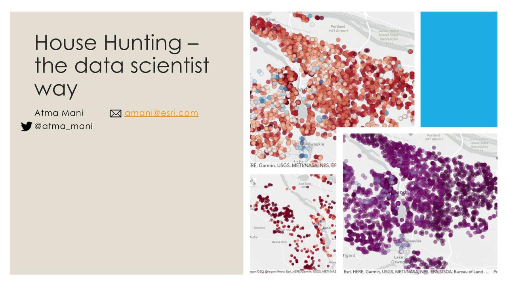
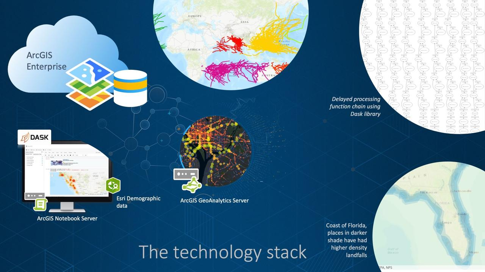

Machine Learning Projects
Today, we teach machines to learn. Tomorrow, we hope they'd return the favor ;-)
Getting started

- Understanding Scikit-Learn syntax
- Linear regression with
sklearnandstatmodels - Naive Bayes classification with
sklearn- a work in progress
ML at scale with PySpark

House hunting the data scientist way

- Recording of this talk and the slide deck
- Technical write up
- Notebooks: Get my notebooks from: arcgis-python-api/talks/GeoDevPDX2018
Analyzing over a century of global hurricane data

This study showcases applying spatial data science techniques to analyze weather data and impacts of climate change on natural disasters. It is featured as a technology spotlight in the book GIS for Science. To get a high level overview of this study and its results, read the StoryMap webapp. For detailed analysis, read the analysis notebooks below: